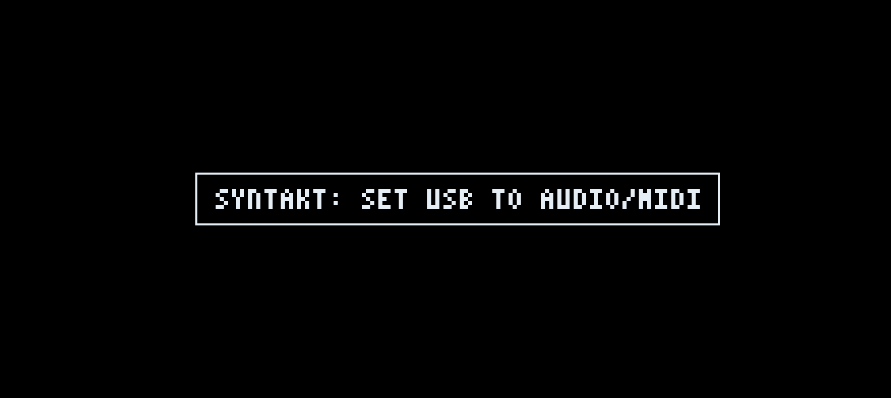
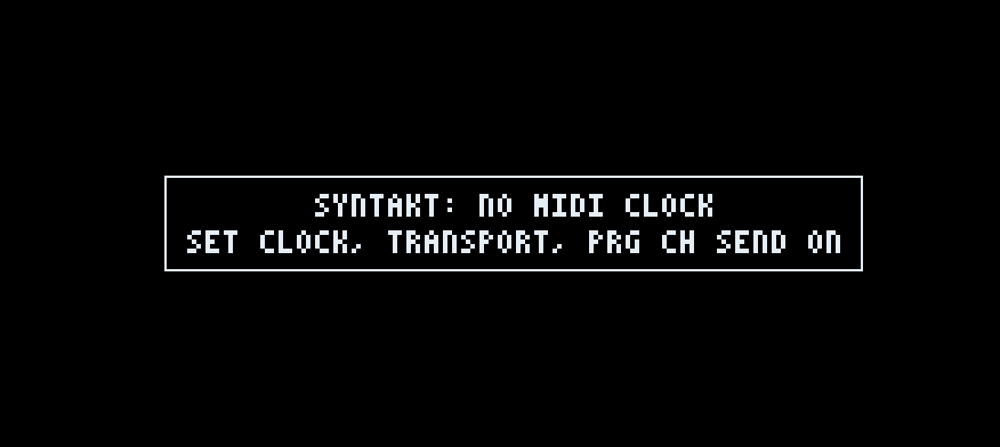

First setup
What you need
| iOS | Android | |
|---|---|---|
| System | iOS 17 or later | Android 8.1 or later, on a phone that allows USB host |
| Cable | USB-C to USB-B, the printer kind. An older iPhone or iPad takes a Lightning to USB adapter; Apple's Lightning to USB Camera Adapter works best. | USB-C to USB-B, the printer kind. |
Setup checklist
- SETTINGS > SYSTEM > USB CONFIG USB AUDIO/MIDI (not OVERBRIDGE)
- SETTINGS > MIDI CONFIG > SYNC CLOCK SEND: ON. TRANSPORT SEND: ON. PROG CH SEND: ON.
- SETTINGS > MIDI CONFIG > PORT CONFIG OUTPUT TO: USB or MIDI+USB
- SETTINGS > AUDIO ROUTING INT TO USB: ON. USB TO MAIN: ON. INT TO MAIN: ON.
- Connect the cable Plug the box into the phone, then open Holy Grail. On Android the phone offers to open Holy Grail for the box: accept, and allow it to use the USB device.
- Box: point MIDI tracks at the app Set a MIDI track on the box to channel 9 to play part 1, and 10, 11 and 12 for parts 2 to 4. Play a note on that track: the part sounds. The channels can be changed, see Parts and engines.
- Press PLAY on the box The app starts with the box and runs at its tempo. Setup is done.
What the app shows
When the cable or a MIDI source appears, the app asks the box who it is. The name comes from the box's answer, never from the name of the USB port. The connection box on the setup page, and the banner when you plug in, show one of these.
| Shown | Meaning | What to do |
|---|---|---|
| The box's name and CONNECTED, for example SYNTAKT CONNECTED | USB audio is on and the box is known. | Nothing. It works. |
| CONTROLLER CONNECTED | USB audio is on, but the box did not answer or the app does not know it. | You can play. Box features such as PULL PROJECT are not offered. |
| The box's name and SET USB TO AUDIO/MIDI | The box answered, but it sends no USB audio. | Do step 1 of the checklist. |
| The box's name and NO MIDI CLOCK | No MIDI clock arrived within two seconds of the box being found. | Do step 2 of the checklist. |
| DISCONNECTED | Nothing is plugged in, or the phone does not see the box. | Check the cable. On Android, see below. |


A warning stays until its cause is fixed or the box is unplugged. If both apply, the USB warning shows first. The app checks nothing else about the box's settings.
Android only
- On some phones, OnePlus among them, the USB-C port stays idle until OTG connection is turned on in the phone's settings. Until then the box is not seen at all.
- If you refused when Android offered to open Holy Grail, unplug the box, plug it in again, accept and allow USB access.
- The Android app has no video recorder and reads WAV samples only.
No box yet?
With no box connected the app opens and every screen works, and it plays through the phone's speaker or headphones. The app's own sequencer is a developer function.